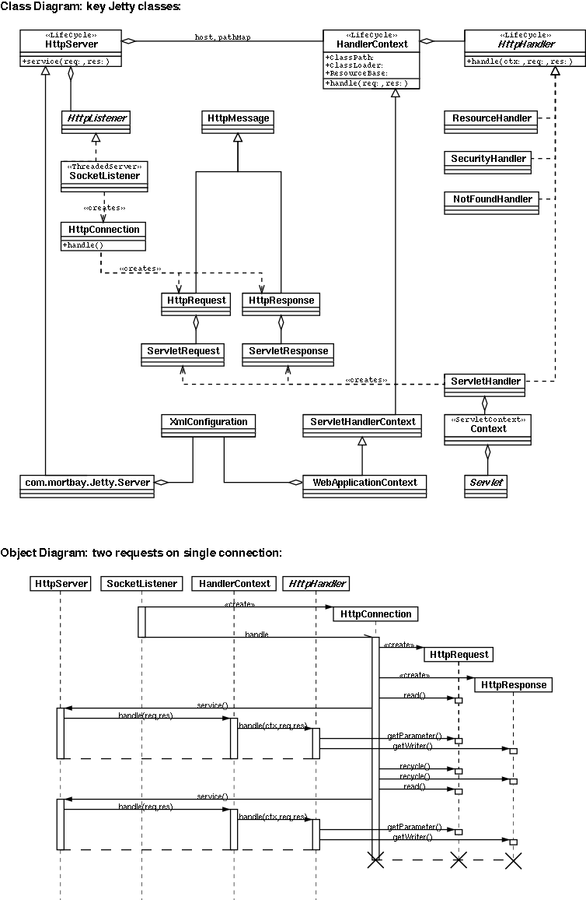

Jetty Architecture

- The org.mortbay.http.HttpServer class provides the core HTTP server.
- The org.mortbay.jetty.Server class extends HttpServer with XML configuration and servlet support.
- A JVM may contain one or more HttpServer instances.
- A HttpServer may contain one or more HttpListener instances.
- A HttpServer may contain one or more HandlerContext instances.
- A HttpServer may contain zero or more UserRealm instances.
- SocketListener is the basic implementation of HttpListener that accepts HTTP connections
on a normal socket.
- JsseListener is an extension of SocketListener that accepts HTTPS connections using a
JSSE SSL implementation.
- HttpListener implementations create HttpConnection instances.
- A HttpConnection instance manages one or more requests received over a connection.
- A HandlerContext has attributes for class path, class loader and resource base, which apply to all the HttpHandlers it contains.
- A HandlerContext is registered in the HttpServer at one and only one context pattern (eg.
/context/*) and for zero or more virtual hosts.
- A HandlerContext contains one or more implementation of HttpHandler, in the order they
are added.
- ResourceHandler is an implementation of HttpHandler that serves static content from the resource base of the HandlerContext.
- ServletHandler is an implementation of HttpHandler that serves Servlets by mapping
a pathspec within the context (eg *.xxx, / or /XX/* ) to a Servlet instance. Dynamic servlets include the class name in the URL, configured servlets have explicit path to class mappings.
- A WebApplication is a specialization of HandlerContext that uses a web.xml file to
configure the context, including a ResourceHandler and a ServletHandler.
Return to JettyDoc